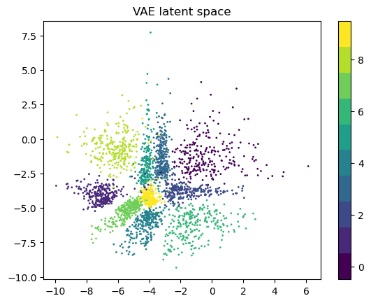
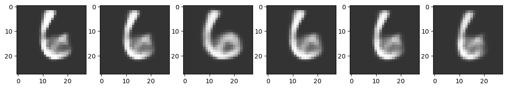

Conditional generation via Bayesian optimization in latent space#
This notebook reproduces part of the Latent space optimization blog by Martin Krasser using PyTorch and BoTorch libraries. The aim is to control the generation of samples from the latent space of a Variational Autoencoder using an objective function based on an additional classifier and Bayesian Optimization.
Model specification#
#This code was partialy generated by chatGPT
import torch
import torch.nn as nn
import torch.optim as optim
import torchvision.datasets as datasets
import torchvision.transforms as transforms
from torch.utils.data import DataLoader
from torchvision.utils import save_image
# Define hyperparameters
device = torch.device("cuda" if torch.cuda.is_available() else "cpu")
num_epochs = 30
batch_size = 128
learning_rate = 1e-3
latent_dim = 2
# Load MNIST dataset
train_dataset = datasets.MNIST(root='data/',
train=True,
transform=transforms.ToTensor(),
download=True)
train_loader = DataLoader(dataset=train_dataset,
batch_size=batch_size,
shuffle=True)
# Define Encoder
class Encoder(nn.Module):
def __init__(self, latent_dim):
super(Encoder, self).__init__()
self.fc1 = nn.Linear(784, 512)
self.fc2 = nn.Linear(512, 256)
self.fc3 = nn.Linear(256, latent_dim)
self.relu = nn.ReLU()
self.sigmoid = nn.Sigmoid()
def forward(self, x):
x = x.view(-1, 784)
x = self.relu(self.fc1(x))
x = self.relu(self.fc2(x))
z_mean = self.fc3(x)
z_log_var = self.fc3(x)
z = self.reparameterize(z_mean, z_log_var)
return z, z_mean, z_log_var
def reparameterize(self, z_mean, z_log_var):
eps = torch.randn_like(z_mean)
return z_mean + torch.exp(z_log_var / 2) * eps
# Define Decoder
class Decoder(nn.Module):
def __init__(self, latent_dim):
super(Decoder, self).__init__()
self.fc1 = nn.Linear(latent_dim, 256)
self.fc2 = nn.Linear(256, 512)
self.fc3 = nn.Linear(512, 784)
self.relu = nn.ReLU()
self.sigmoid = nn.Sigmoid()
def forward(self, x):
x = self.relu(self.fc1(x))
x = self.relu(self.fc2(x))
x = self.sigmoid(self.fc3(x))
return x.view(-1, 1, 28, 28)
# Define Classifier
class Classifier_ld(nn.Module):
def __init__(self,latent_dim):
super(Classifier_ld, self).__init__()
self.fc1 = nn.Linear(latent_dim, 128)
self.fc2 = nn.Linear(128, 128)
self.fc3 = nn.Linear(128, 10)
self.relu = nn.ReLU()
def forward(self, x):
x = self.relu(self.fc1(x))
x = self.relu(self.fc2(x))
x = self.fc3(x)
return x
Let’s train the VAE
#This code was partialy generated by chatGPT
# Instantiate the encoder, decoder and classifier
encoder = Encoder(latent_dim).to(device)
decoder = Decoder(latent_dim).to(device)
classifier = Classifier_ld(latent_dim).to(device)
# Define loss functions
reconstruction_loss = nn.BCELoss(reduction='sum')
classification_loss = nn.CrossEntropyLoss()
# Define optimizers
ae_optimizer = optim.Adam(list(encoder.parameters()) + list(decoder.parameters()), lr=learning_rate)
clf_optimizer = optim.Adam(list(encoder.parameters()) + list(classifier.parameters()), lr=learning_rate)
# Training loop
for epoch in range(num_epochs):
for batch_idx, (data, labels) in enumerate(train_loader):
data = data.to(device)
labels = labels.to(device)
# Train Autoencoder
ae_optimizer.zero_grad()
# Forward pass through encoder and decoder
z, z_mean, z_log_var = encoder(data)
recon_data = decoder(z)
# Calculate reconstruction loss
recon_loss = reconstruction_loss(recon_data, data)
# Calculate KL divergence loss
kl_loss = -0.5 * torch.sum(1 + z_log_var - z_mean**2 - torch.exp(z_log_var))
# Calculate total loss
ae_loss = (recon_loss + kl_loss) / batch_size
# Backward pass and optimize
ae_loss.backward(retain_graph=True)
ae_optimizer.step()
# Train classifier
clf_optimizer.zero_grad()
# Forward pass through classifier
z, _, _ = encoder(data)
logits = classifier(z)
# Calculate classification loss
clf_loss = classification_loss(logits, labels)
# Backward pass and optimize
clf_loss.backward()
clf_optimizer.step()
if batch_idx % 100 == 0:
print('Epoch [{}/{}], Batch [{}/{}], AE Loss: {:.4f}, CLF Loss: {:.4f}'
.format(epoch+1, num_epochs, batch_idx+1, len(train_loader), ae_loss.item(), clf_loss.item()))
# Save some images from the decoder
with torch.no_grad():
sample = torch.randn(64, latent_dim).to(device)
recon_sample = decoder(sample).view(64, 1, 28, 28)
save_image(recon_sample, 'samples/sample_{}.png'.format(epoch+1))
# Save the models
torch.save(encoder.state_dict(), 'vae_encoder.pth')
torch.save(decoder.state_dict(), 'vae_decoder.pth')
torch.save(classifier.state_dict(), 'vae_classifier.pth')
Epoch [1/30], Batch [1/469], AE Loss: 545.4924, CLF Loss: 2.3100
Epoch [1/30], Batch [101/469], AE Loss: 200.9923, CLF Loss: 1.3671
Epoch [1/30], Batch [201/469], AE Loss: 193.9217, CLF Loss: 1.0772
Epoch [1/30], Batch [301/469], AE Loss: 199.0124, CLF Loss: 1.3068
Epoch [1/30], Batch [401/469], AE Loss: 197.4312, CLF Loss: 0.9832
Epoch [2/30], Batch [1/469], AE Loss: 181.5975, CLF Loss: 0.9848
Epoch [2/30], Batch [101/469], AE Loss: 196.3110, CLF Loss: 1.1122
Epoch [2/30], Batch [201/469], AE Loss: 195.2994, CLF Loss: 1.1312
Epoch [2/30], Batch [301/469], AE Loss: 192.7144, CLF Loss: 0.8461
Epoch [2/30], Batch [401/469], AE Loss: 193.4322, CLF Loss: 0.9295
Epoch [3/30], Batch [1/469], AE Loss: 178.5724, CLF Loss: 0.6685
Epoch [3/30], Batch [101/469], AE Loss: 184.1384, CLF Loss: 0.7732
Epoch [3/30], Batch [201/469], AE Loss: 186.3365, CLF Loss: 0.7137
Epoch [3/30], Batch [301/469], AE Loss: 178.4961, CLF Loss: 0.5686
Epoch [3/30], Batch [401/469], AE Loss: 183.2542, CLF Loss: 0.7366
Epoch [4/30], Batch [1/469], AE Loss: 199.1188, CLF Loss: 0.6273
Epoch [4/30], Batch [101/469], AE Loss: 185.3549, CLF Loss: 0.6946
Epoch [4/30], Batch [201/469], AE Loss: 184.7052, CLF Loss: 0.6188
Epoch [4/30], Batch [301/469], AE Loss: 179.2206, CLF Loss: 0.6359
Epoch [4/30], Batch [401/469], AE Loss: 188.5701, CLF Loss: 0.6962
Epoch [5/30], Batch [1/469], AE Loss: 188.7162, CLF Loss: 0.7525
Epoch [5/30], Batch [101/469], AE Loss: 182.5582, CLF Loss: 0.4407
Epoch [5/30], Batch [201/469], AE Loss: 188.1613, CLF Loss: 0.5844
Epoch [5/30], Batch [301/469], AE Loss: 181.9596, CLF Loss: 0.5690
Epoch [5/30], Batch [401/469], AE Loss: 174.7408, CLF Loss: 0.4521
Epoch [6/30], Batch [1/469], AE Loss: 178.9731, CLF Loss: 0.5454
Epoch [6/30], Batch [101/469], AE Loss: 177.5477, CLF Loss: 0.4707
Epoch [6/30], Batch [201/469], AE Loss: 176.2795, CLF Loss: 0.4979
Epoch [6/30], Batch [301/469], AE Loss: 175.6630, CLF Loss: 0.4477
Epoch [6/30], Batch [401/469], AE Loss: 176.8365, CLF Loss: 0.4960
Epoch [7/30], Batch [1/469], AE Loss: 174.5280, CLF Loss: 0.5306
Epoch [7/30], Batch [101/469], AE Loss: 176.3693, CLF Loss: 0.5668
Epoch [7/30], Batch [201/469], AE Loss: 176.4872, CLF Loss: 0.5451
Epoch [7/30], Batch [301/469], AE Loss: 184.1514, CLF Loss: 0.6212
Epoch [7/30], Batch [401/469], AE Loss: 175.6204, CLF Loss: 0.6230
Epoch [8/30], Batch [1/469], AE Loss: 173.4249, CLF Loss: 0.3921
Epoch [8/30], Batch [101/469], AE Loss: 176.0796, CLF Loss: 0.5028
Epoch [8/30], Batch [201/469], AE Loss: 177.9850, CLF Loss: 0.5766
Epoch [8/30], Batch [301/469], AE Loss: 175.3270, CLF Loss: 0.4800
Epoch [8/30], Batch [401/469], AE Loss: 168.6687, CLF Loss: 0.5362
Epoch [9/30], Batch [1/469], AE Loss: 176.2437, CLF Loss: 0.3416
Epoch [9/30], Batch [101/469], AE Loss: 169.8196, CLF Loss: 0.4777
Epoch [9/30], Batch [201/469], AE Loss: 175.6768, CLF Loss: 0.4484
Epoch [9/30], Batch [301/469], AE Loss: 172.0016, CLF Loss: 0.3032
Epoch [9/30], Batch [401/469], AE Loss: 177.0597, CLF Loss: 0.3668
Epoch [10/30], Batch [1/469], AE Loss: 173.8509, CLF Loss: 0.3853
Epoch [10/30], Batch [101/469], AE Loss: 171.4484, CLF Loss: 0.4697
Epoch [10/30], Batch [201/469], AE Loss: 174.0299, CLF Loss: 0.3874
Epoch [10/30], Batch [301/469], AE Loss: 165.8797, CLF Loss: 0.2130
Epoch [10/30], Batch [401/469], AE Loss: 176.3258, CLF Loss: 0.4156
Epoch [11/30], Batch [1/469], AE Loss: 171.4645, CLF Loss: 0.3566
Epoch [11/30], Batch [101/469], AE Loss: 170.6882, CLF Loss: 0.2313
Epoch [11/30], Batch [201/469], AE Loss: 169.2562, CLF Loss: 0.4700
Epoch [11/30], Batch [301/469], AE Loss: 176.3237, CLF Loss: 0.5032
Epoch [11/30], Batch [401/469], AE Loss: 182.1141, CLF Loss: 0.2621
Epoch [12/30], Batch [1/469], AE Loss: 170.6171, CLF Loss: 0.3475
Epoch [12/30], Batch [101/469], AE Loss: 168.5952, CLF Loss: 0.3273
Epoch [12/30], Batch [201/469], AE Loss: 166.0103, CLF Loss: 0.2302
Epoch [12/30], Batch [301/469], AE Loss: 175.4098, CLF Loss: 0.4800
Epoch [12/30], Batch [401/469], AE Loss: 174.4913, CLF Loss: 0.4235
Epoch [13/30], Batch [1/469], AE Loss: 171.6753, CLF Loss: 0.2984
Epoch [13/30], Batch [101/469], AE Loss: 174.2181, CLF Loss: 0.3016
Epoch [13/30], Batch [201/469], AE Loss: 171.9986, CLF Loss: 0.2617
Epoch [13/30], Batch [301/469], AE Loss: 163.6510, CLF Loss: 0.2491
Epoch [13/30], Batch [401/469], AE Loss: 171.6305, CLF Loss: 0.2246
Epoch [14/30], Batch [1/469], AE Loss: 169.3166, CLF Loss: 0.3370
Epoch [14/30], Batch [101/469], AE Loss: 160.8517, CLF Loss: 0.2974
Epoch [14/30], Batch [201/469], AE Loss: 174.5082, CLF Loss: 0.2595
Epoch [14/30], Batch [301/469], AE Loss: 166.7460, CLF Loss: 0.2544
Epoch [14/30], Batch [401/469], AE Loss: 174.5871, CLF Loss: 0.2980
Epoch [15/30], Batch [1/469], AE Loss: 175.1140, CLF Loss: 0.3248
Epoch [15/30], Batch [101/469], AE Loss: 171.7569, CLF Loss: 0.2893
Epoch [15/30], Batch [201/469], AE Loss: 178.7505, CLF Loss: 0.3959
Epoch [15/30], Batch [301/469], AE Loss: 166.5421, CLF Loss: 0.2029
Epoch [15/30], Batch [401/469], AE Loss: 171.6021, CLF Loss: 0.2968
Epoch [16/30], Batch [1/469], AE Loss: 171.7070, CLF Loss: 0.2761
Epoch [16/30], Batch [101/469], AE Loss: 174.8216, CLF Loss: 0.1585
Epoch [16/30], Batch [201/469], AE Loss: 171.5100, CLF Loss: 0.2175
Epoch [16/30], Batch [301/469], AE Loss: 171.0844, CLF Loss: 0.3081
Epoch [16/30], Batch [401/469], AE Loss: 166.1163, CLF Loss: 0.2528
Epoch [17/30], Batch [1/469], AE Loss: 172.6341, CLF Loss: 0.3232
Epoch [17/30], Batch [101/469], AE Loss: 171.4952, CLF Loss: 0.4037
Epoch [17/30], Batch [201/469], AE Loss: 176.0192, CLF Loss: 0.2198
Epoch [17/30], Batch [301/469], AE Loss: 183.4087, CLF Loss: 0.4343
Epoch [17/30], Batch [401/469], AE Loss: 165.6281, CLF Loss: 0.3032
Epoch [18/30], Batch [1/469], AE Loss: 173.0598, CLF Loss: 0.2338
Epoch [18/30], Batch [101/469], AE Loss: 168.2146, CLF Loss: 0.2246
Epoch [18/30], Batch [201/469], AE Loss: 175.7707, CLF Loss: 0.2516
Epoch [18/30], Batch [301/469], AE Loss: 169.0911, CLF Loss: 0.2750
Epoch [18/30], Batch [401/469], AE Loss: 175.1616, CLF Loss: 0.3387
Epoch [19/30], Batch [1/469], AE Loss: 173.3850, CLF Loss: 0.2538
Epoch [19/30], Batch [101/469], AE Loss: 172.3723, CLF Loss: 0.3292
Epoch [19/30], Batch [201/469], AE Loss: 172.4008, CLF Loss: 0.4138
Epoch [19/30], Batch [301/469], AE Loss: 172.7500, CLF Loss: 0.2947
Epoch [19/30], Batch [401/469], AE Loss: 164.1583, CLF Loss: 0.1757
Epoch [20/30], Batch [1/469], AE Loss: 172.7690, CLF Loss: 0.2363
Epoch [20/30], Batch [101/469], AE Loss: 168.0477, CLF Loss: 0.2256
Epoch [20/30], Batch [201/469], AE Loss: 168.9702, CLF Loss: 0.2433
Epoch [20/30], Batch [301/469], AE Loss: 164.3781, CLF Loss: 0.1896
Epoch [20/30], Batch [401/469], AE Loss: 172.4533, CLF Loss: 0.1571
Epoch [21/30], Batch [1/469], AE Loss: 170.5023, CLF Loss: 0.1946
Epoch [21/30], Batch [101/469], AE Loss: 170.4040, CLF Loss: 0.1970
Epoch [21/30], Batch [201/469], AE Loss: 179.3698, CLF Loss: 0.2440
Epoch [21/30], Batch [301/469], AE Loss: 165.4255, CLF Loss: 0.2169
Epoch [21/30], Batch [401/469], AE Loss: 165.0574, CLF Loss: 0.3261
Epoch [22/30], Batch [1/469], AE Loss: 172.5496, CLF Loss: 0.3419
Epoch [22/30], Batch [101/469], AE Loss: 163.6397, CLF Loss: 0.0991
Epoch [22/30], Batch [201/469], AE Loss: 175.8140, CLF Loss: 0.3121
Epoch [22/30], Batch [301/469], AE Loss: 174.4562, CLF Loss: 0.3600
Epoch [22/30], Batch [401/469], AE Loss: 161.4942, CLF Loss: 0.2257
Epoch [23/30], Batch [1/469], AE Loss: 170.2951, CLF Loss: 0.3873
Epoch [23/30], Batch [101/469], AE Loss: 175.2247, CLF Loss: 0.2076
Epoch [23/30], Batch [201/469], AE Loss: 166.2716, CLF Loss: 0.1753
Epoch [23/30], Batch [301/469], AE Loss: 171.6725, CLF Loss: 0.2803
Epoch [23/30], Batch [401/469], AE Loss: 169.8044, CLF Loss: 0.2843
Epoch [24/30], Batch [1/469], AE Loss: 164.4375, CLF Loss: 0.1779
Epoch [24/30], Batch [101/469], AE Loss: 171.6494, CLF Loss: 0.1756
Epoch [24/30], Batch [201/469], AE Loss: 164.1150, CLF Loss: 0.0581
Epoch [24/30], Batch [301/469], AE Loss: 171.1083, CLF Loss: 0.1367
Epoch [24/30], Batch [401/469], AE Loss: 169.1642, CLF Loss: 0.1226
Epoch [25/30], Batch [1/469], AE Loss: 171.9264, CLF Loss: 0.2855
Epoch [25/30], Batch [101/469], AE Loss: 169.9185, CLF Loss: 0.1801
Epoch [25/30], Batch [201/469], AE Loss: 168.6080, CLF Loss: 0.2878
Epoch [25/30], Batch [301/469], AE Loss: 167.4130, CLF Loss: 0.2012
Epoch [25/30], Batch [401/469], AE Loss: 178.4047, CLF Loss: 0.3661
Epoch [26/30], Batch [1/469], AE Loss: 169.1470, CLF Loss: 0.2191
Epoch [26/30], Batch [101/469], AE Loss: 168.1192, CLF Loss: 0.3573
Epoch [26/30], Batch [201/469], AE Loss: 170.8242, CLF Loss: 0.2836
Epoch [26/30], Batch [301/469], AE Loss: 170.8204, CLF Loss: 0.2044
Epoch [26/30], Batch [401/469], AE Loss: 172.0535, CLF Loss: 0.2165
Epoch [27/30], Batch [1/469], AE Loss: 171.0599, CLF Loss: 0.2357
Epoch [27/30], Batch [101/469], AE Loss: 167.0287, CLF Loss: 0.1883
Epoch [27/30], Batch [201/469], AE Loss: 169.6199, CLF Loss: 0.1609
Epoch [27/30], Batch [301/469], AE Loss: 176.2813, CLF Loss: 0.3085
Epoch [27/30], Batch [401/469], AE Loss: 170.7436, CLF Loss: 0.4547
Epoch [28/30], Batch [1/469], AE Loss: 174.4430, CLF Loss: 0.1658
Epoch [28/30], Batch [101/469], AE Loss: 166.7202, CLF Loss: 0.3040
Epoch [28/30], Batch [201/469], AE Loss: 172.9164, CLF Loss: 0.1860
Epoch [28/30], Batch [301/469], AE Loss: 166.2357, CLF Loss: 0.3634
Epoch [28/30], Batch [401/469], AE Loss: 171.9458, CLF Loss: 0.1884
Epoch [29/30], Batch [1/469], AE Loss: 169.5468, CLF Loss: 0.2551
Epoch [29/30], Batch [101/469], AE Loss: 166.9827, CLF Loss: 0.1577
Epoch [29/30], Batch [201/469], AE Loss: 166.6881, CLF Loss: 0.1828
Epoch [29/30], Batch [301/469], AE Loss: 165.5355, CLF Loss: 0.2384
Epoch [29/30], Batch [401/469], AE Loss: 177.4192, CLF Loss: 0.3304
Epoch [30/30], Batch [1/469], AE Loss: 165.7339, CLF Loss: 0.1864
Epoch [30/30], Batch [101/469], AE Loss: 175.0054, CLF Loss: 0.1692
Epoch [30/30], Batch [201/469], AE Loss: 170.3859, CLF Loss: 0.2535
Epoch [30/30], Batch [301/469], AE Loss: 173.8901, CLF Loss: 0.2682
Epoch [30/30], Batch [401/469], AE Loss: 167.0509, CLF Loss: 0.1303
#load models
encoder = Encoder(latent_dim)
encoder.load_state_dict(torch.load('vae_encoder.pth'))
#------------
decoder = Decoder(latent_dim)
decoder.load_state_dict(torch.load('vae_decoder.pth'))
#------------
classifier = Classifier_ld(latent_dim)
classifier.load_state_dict(torch.load('vae_classifier.pth'))
<All keys matched successfully>
import matplotlib.pyplot as plt
import numpy as np
Data = []
Labels = []
for _ in range(20):
data, labels = next(iter(train_loader))
z, _, _ = encoder(data)
Data.append(z.detach().numpy())
Labels.append(labels.detach().numpy())
Data = np.concatenate(Data, axis=0)
Labels = np.concatenate(Labels, axis=0)
cmap = plt.get_cmap('viridis', 10)
sc = plt.scatter(Data[:, 0], Data[:, 1], c=Labels,
cmap=cmap,
vmin=-0.5, vmax=9.5,
marker='o', s=1)
plt.colorbar(sc)
plt.title('VAE latent space')
plt.show()

Now we can define the objective function and surrogate model
import os
from botorch.models import SingleTaskGP
from gpytorch.mlls.exact_marginal_log_likelihood import ExactMarginalLogLikelihood
from botorch.utils.transforms import normalize, unnormalize
from botorch.models.transforms import Standardize, Normalize
from scipy.stats import multivariate_normal
d = latent_dim
dtype = torch.float32
SMOKE_TEST = os.environ.get("SMOKE_TEST", False)
bounds = torch.tensor([[-8.0] * d, [8.0] * d], device=device, dtype=dtype)
def nll(t, target):
'''
Bayesian optimization objective.
'''
# Decode latent vector into image
mvn = multivariate_normal(mean=[0, 0], cov=[[1, 0], [0, 1]])
# Predict probabilities with separate classifier
c_probs = nn.functional.softmax(classifier(t),dim=-1)
c_probs = c_probs.detach().numpy()
nll_prior = 0 #mvn.logpdf(t).reshape(-1, 1)
nll_pred = -np.log(c_probs[:,target] + 1e-8).reshape(-1, 1)
return torch.tensor(nll_prior + nll_pred)
def optimizer_for(target):
def nll_target(t):
return nll(t, target)
return nll_target
def gen_initial_data(score_image,n=5):
# generate training data
train_x = unnormalize(
torch.rand(n, d, device=device, dtype=dtype),
bounds=bounds
)
train_obj = score_image(train_x)
best_observed_value = train_obj.max().item()
return train_x, train_obj, best_observed_value
def get_fitted_model(train_x, train_obj, state_dict=None):
# initialize and fit model
model = SingleTaskGP(
train_X=normalize(train_x, bounds),
train_Y=train_obj,
outcome_transform=Standardize(m=1)
)
if state_dict is not None:
model.load_state_dict(state_dict)
mll = ExactMarginalLogLikelihood(model.likelihood, model)
mll.to(train_x)
fit_gpytorch_mll(mll)
return model
from botorch.optim import optimize_acqf
BATCH_SIZE = 3 if not SMOKE_TEST else 2
NUM_RESTARTS = 10 if not SMOKE_TEST else 2
RAW_SAMPLES = 256 if not SMOKE_TEST else 4
def optimize_acqf_and_get_observation(acq_func,score_image):
"""Optimizes the acquisition function, and returns a
new candidate and a noisy observation"""
# optimize
candidates, _ = optimize_acqf(
acq_function=acq_func,
bounds=torch.stack(
[
torch.zeros(d, dtype=dtype, device=device),
torch.ones(d, dtype=dtype, device=device),
]
),
q=BATCH_SIZE,
num_restarts=NUM_RESTARTS,
raw_samples=RAW_SAMPLES,
)
# observe new values
new_x = unnormalize(candidates.detach(), bounds=bounds)
new_obj = score_image(new_x)
return new_x, new_obj
target = 6
score_image = optimizer_for(target)
from botorch import fit_gpytorch_mll
from botorch.acquisition.monte_carlo import qExpectedImprovement
from botorch.sampling.normal import SobolQMCNormalSampler
seed = 1
torch.manual_seed(seed)
N_BATCH = 50
best_observed = []
# call helper function to initialize model
train_x, train_obj, best_value = gen_initial_data(score_image,n=5)
best_observed.append(best_value)
import warnings
warnings.filterwarnings("ignore")
print(f"\nRunning BO ", end="")
state_dict = None
# run N_BATCH rounds of BayesOpt after the initial random batch
for iteration in range(N_BATCH):
# fit the model
model = get_fitted_model(
train_x=train_x,
train_obj=train_obj.type(torch.float32),
state_dict=state_dict,
)
# define the qNEI acquisition function
qEI = qExpectedImprovement(
model=model, best_f=train_obj.max()
)
# optimize and get new observation
new_x, new_obj = optimize_acqf_and_get_observation(qEI,score_image)
# update training points
train_x = torch.cat((train_x, new_x))
train_obj = torch.cat((train_obj, new_obj))
# update progress
best_value = train_obj.max().item()
best_observed.append(best_value)
state_dict = model.state_dict()
print(".", end="")
Running BO ..................................................
Let’s see the best samples from the latent space found by the BO algorithm after passed through the decoder.
ind = np.argsort(train_obj.squeeze().detach().numpy())
fig, ax = plt.subplots(1, 6, figsize=(14, 14))
for i, ax in enumerate(ax.flat):
img = decoder(train_x[ind[i]].view(1, -1)).squeeze().detach().numpy()
ax.imshow(img, alpha=0.8, cmap="gray")
